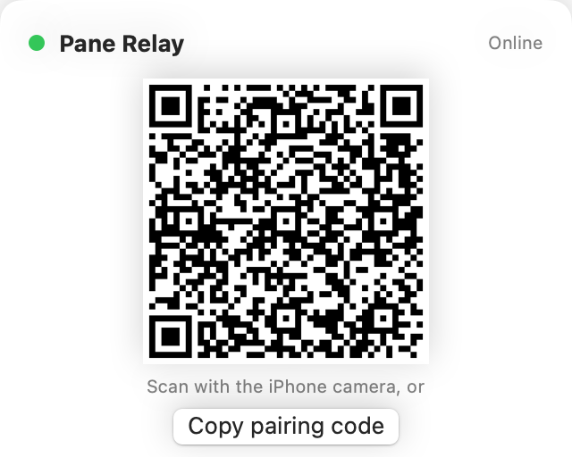
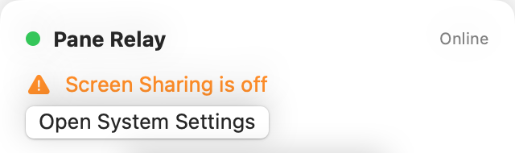

Pair witha scan.
Pane Relay shows a code in the menu bar. Point the iPhone camera at it and Pane opens, saves the Mac and pairs it. Every iPhone and iPad you own, no accounts.

A small app that lives in your Mac’s menu bar. Pair once by scanning a code, then Pane reaches the Mac from any network: cellular, hotel Wi-Fi, the office. No Tailscale, no VPN, no router settings.

Both ends dial out to the relay, so there is nothing to open on the router and nothing to configure twice.
Pane Relay shows a code in the menu bar. Point the iPhone camera at it and Pane opens, saves the Mac and pairs it. Every iPhone and iPad you own, no accounts.

Both sides dial out, so it works behind any router, carrier-grade NAT included. Pane still tries the Mac directly first and uses the relay only when nothing answers.
The relay forwards bytes between your device and your Mac and keeps none of them. It knows a Mac by a random id, not by you. Your Mac login stays in the Keychain, as always.
Pane Relay starts with your Mac, reconnects on its own and tells you when Screen Sharing is off. The menu bar shows what is paired and whether a session is live.

Open the app. It registers itself with the relay and shows a pairing code in the menu bar. Make sure Screen Sharing is on (System Settings › General › Sharing); the app says so when it is not.
Point the camera at it. Pane opens, saves the Mac if it is new and pairs it. For a second device, scan again. Or copy the code and paste it under Relay on the Mac’s Edit screen in Pane.
At home Pane talks to the Mac directly. Anywhere else, when the home address does not answer, it goes through the relay. Same sign-in, same session, same keyboard shortcuts.
Per Mac, with unlimited iPhones and iPads. Every new Mac starts with a 14-day free trial, no card needed. After that, buy a license key, paste it into Pane Relay and you are done.
Charged in US dollars by Polar, our merchant of record. Receipts, invoices, card changes and cancelling live in Polar’s customer portal.
The iPhone and iPad app stays free. Tailscale, VPNs and public addresses keep working in Pane without Pane Relay.
Both legs run over TLS to the relay, so nobody on the Wi-Fi can read anything. Inside the relay the stream passes through as it would on your own network, where your Mac login is encrypted by Screen Sharing and the screen itself is not. End-to-end encryption between the device and the Mac, which would keep even the relay blind, is in the works.
IP addresses, timestamps and the amount of data, for as long as a session lasts. No screen content, keystrokes or passwords are stored, and there is no account that ties a Mac to a person. Details in the privacy policy.
Yes: in Pane Relay’s menu next to the device, or in Pane under Edit › Relay › Unpair. Pairing codes can be regenerated from the Mac at any time.
No. On your own Wi-Fi Pane connects directly, relay or not. Pane Relay is for everywhere else.
macOS 14 Sonoma or later with Screen Sharing turned on, and Pane 1.1 or later on the iPhone or iPad. The Mac must be awake: Wake-on-LAN does not cross the internet, so a Mac that is plugged in can be set to never sleep in System Settings › Energy.
Checkout is handled by Polar, our merchant of record, with a license key in your inbox right after. Cancel, change the card or download invoices in Polar’s customer portal; the Mac keeps working until the year is up.
Install on the Mac, scan with the iPhone, done. The first 14 days are free, no card needed.
Download for Mac Buy · $19 a year Notarized by Apple · macOS 14+ · needs Pane 1.1+ on the iPhone